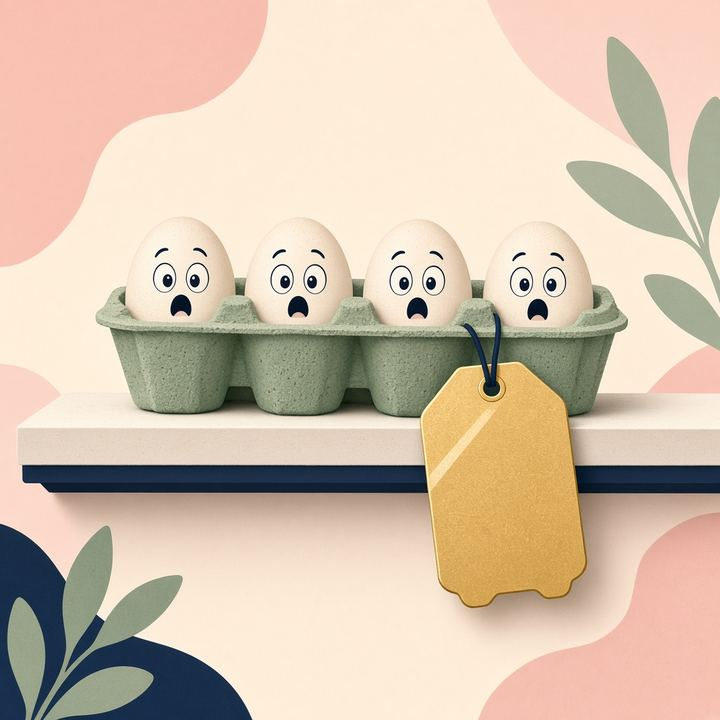
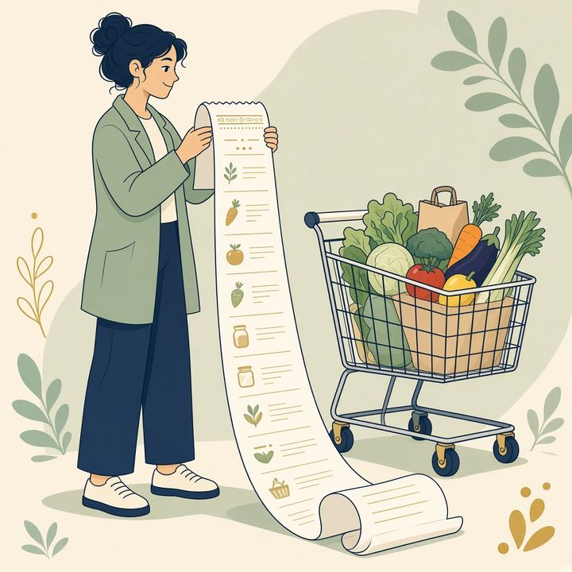
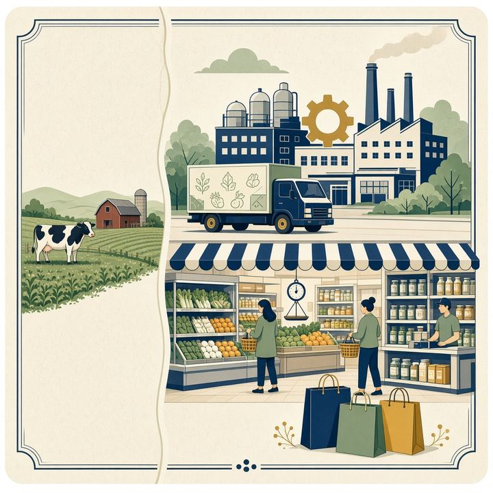
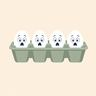
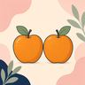
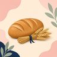
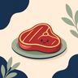
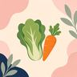
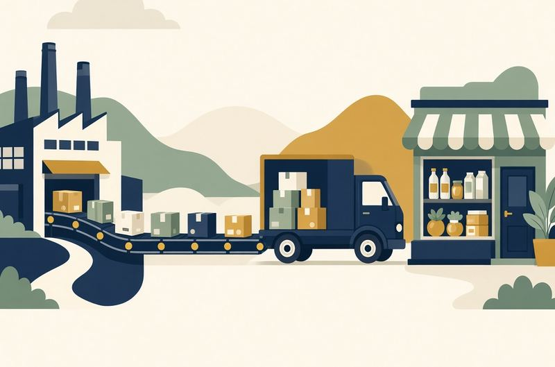
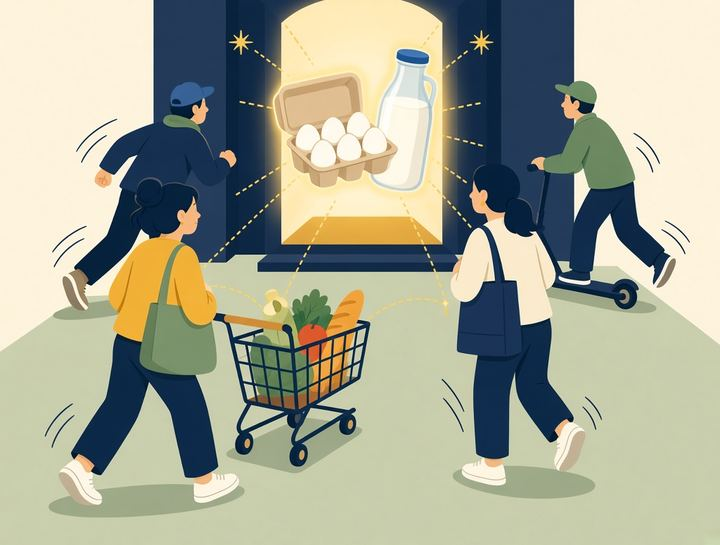

Gas pumps
The original rocket-and-feather. Crude jumps, the price board jumps. Crude falls, the board takes its time.
Women in Data Datathon 2026 · public explorer
Shoppers call it rockets and feathers: the shelf blasts off with a shock, then floats down — if it comes down at all. We tested farm-to-shelf food prices in 11 countries. Use the country and year filters to see your aisle.
average grocery change that same quarter
the shelf barely moved



Shoppers named it first
The complaint is older than the paper. UK drivers said petrol jumped with crude and crawled back when crude fell. Economists later measured the nickname. Formal name: asymmetric price transmission. It is common. It is not a law.
Three competition reports hear the same complaint: the pump jumps when crude jumps and crawls back when crude falls.
The UK inquiry sketches weekly prices and calls the picture “rockets and feathers.” They still cannot prove the average delay is different.
Robert Bacon tests UK petrol, 1982–89. The rise is a bit faster and more bunched than the fall. Economists keep the name.
Peltzman: “Prices Rise Faster than They Fall.” Gasoline, bank rates, and many other markets. Common — not a petrol quirk.
Surveys of agricultural markets are mixed. Some countries. Some foods. The grocery aisle is still an open case.
Do groceries do it from the farm to the shelf? We tested the U.S. monthly, then Canada, the UK, and the EU six.
The original rocket-and-feather. Crude jumps, the price board jumps. Crude falls, the board takes its time.
Loan rates often reprice up faster than deposit rates reprice down. Search costs and sticky menus.
The farm is often a dime of the food dollar. A tiny, noisy input cannot drag a sticky marketing bill.
The complaint is older than the paper. Bacon measured a nickname. Food is why we are here.
Interactive
Brown is the quarter the farm or factory price rose. Blue is the quarter it fell. The line chart is rebased so 2021 Q1 equals 100 — official bases differ, so raw index levels are not comparable across countries.

Eggs
Fruit
Grain
Meat
VegetablesRebased index, 2021 Q1 = 100
Average percent change in the quarters the producer price moved
Eleven-country rank
Ranked by how little shelf prices fall — or whether they still rise — in quarters when producer prices fall. Rank 1 is stickiest. This uses the full 2016–2026 paired window, not the year menus above.
| Rank | Country | Grocery when farm rose | Grocery when farm fell | In plain words |
|---|
For shoppers
About 10.8 cents of the U.S. food dollar is farm product. The rest is processing, trucks, boxes, ads, and the store. A quiet farm cannot drag a sticky marketing bill.

Less processed food usually has a larger farm share. That is not realistic in a food desert, or without a kitchen or a fridge.

Stores often keep those staples cheap — sometimes at a loss — so you walk in. Compare circulars. Split a shop only if the time and fuel are worth it.
If a chain keeps prices high after a shock has passed, naming that is the consumer lever. Live store prices would make this dashboard sharper. We did not have them.
For the datathon and anyone who wants the method
Notebook 1 · United States
Nine close BLS pairs (eggs, milk, chicken, beef, pork, fruit, vegetables, legumes, rice). Producer-price changes split into rises vs falls, lags 0–3, one model per food. No pooling. Direction often leans rocket-and-feather. It is not statistically significant at the farm gate.
Open the U.S. ColabNotebooks 2 & 3 · Canada, UK, EU six
Official CPI and PPI paired by country, food, and quarter. A quarter is kept only if both sides exist on the same index base. Pass-through is mean grocery change ÷ mean farm change in those windows. Canada, the UK, and the EU six (Czechia, Germany, Spain, France, Italy, Poland) are the chart set.